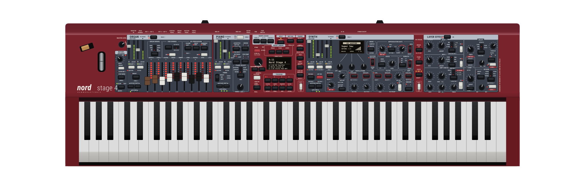

Nord Stage 4 73 — vector recreation study
Recreation
Overlay
Diff
Wipe
Photo
Photo
55%
Seam
Section splits
Photo overlay is the real product shot via the
/reference
route (dev bridge, or
/secret
unlock on production). Hold
V
to peek the photo.
reference photo unavailable — showing the recreation on its own
